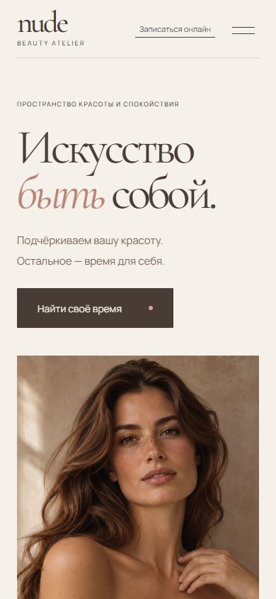
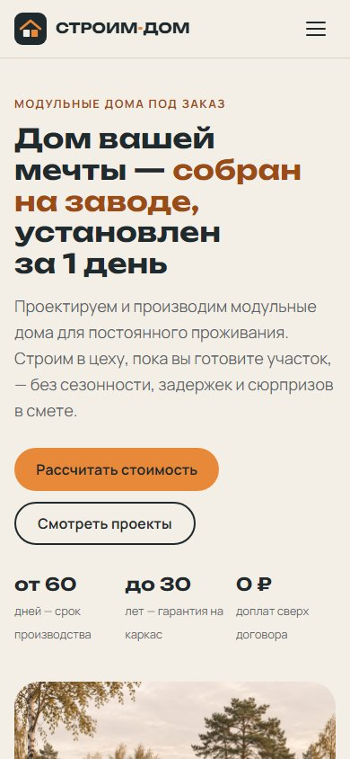
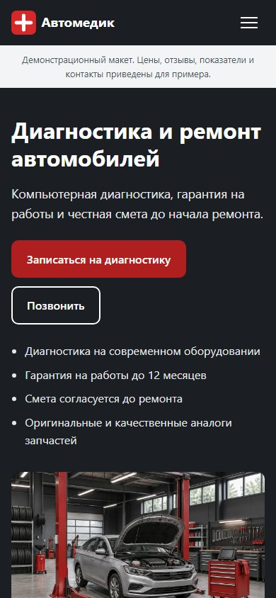
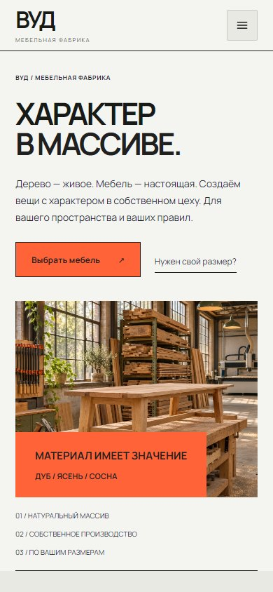

Портфолио
Четыре проекта.
Четыре характера.
Каждый проект можно открыть
и посмотреть в работе.

Посмотреть сайт
Красота и уходДемонстрационный проект
NUDE beauty atelier
Спокойный сайт пространства красоты. Крупная типографика, услуги по направлениям и запись к мастеру.
Открыть сайт NUDE в новой вкладкеО проекте
Задача концепта — передать атмосферу салона и помочь выбрать услугу.
- Переключение направлений услуг
- Карточки команды и форма записи
- Адаптация для телефона
HTML · CSS · JavaScript

Посмотреть сайт
СтроительствоДемонстрационный проект
СТРОИМ-ДОМ
Лендинг модульных домов: от выбора проекта и технологии до предварительного расчёта стоимости.
Открыть сайт СТРОИМ-ДОМ в новой вкладкеО проекте
Задача концепта — объяснить продукт и помочь покупателю сравнить варианты.
- Подборка проектов домов
- Интерактивный калькулятор
- Этапы работы и ответы на вопросы
HTML · CSS · JavaScript

Посмотреть сайт
АвтосервисДемонстрационный проект
Автомедик
Сайт автосервиса с услугами, ценами и записью. Важная информация под рукой, в том числе на телефоне.
Открыть сайт Автомедик в новой вкладкеО проекте
Задача концепта — помочь посетителю найти нужный ремонт и способ связи.
- Услуги и ориентиры стоимости
- Частые вопросы и контакты
- Форма записи с проверкой полей
HTML · CSS · JavaScript

Посмотреть сайт
Мебель и производствоДемонстрационный проект
Вуд мебельная фабрика
Многостраничный сайт с каталогом мебели, страницей производства и разделом индивидуальных заказов.
Открыть сайт Вуд в новой вкладкеО проекте
Задача концепта — объединить каталог и рассказ о производстве в одном сайте.
- Каталог с категориями и карточками
- Отдельные страницы компании и производства
- Сценарий заказа по своим размерам
HTML · CSS · JavaScript
Подход к работе
Разберём задачу.
Соберём решение.
У каждого проекта своя аудитория, задачи и визуальный язык. От этого отталкиваюсь в структуре и дизайне.
Начинаем с задачи
Обсуждаем аудиторию, содержание и то, какое действие должен совершить посетитель.
Собираем целую картину
Продумываем структуру и визуальный стиль. Проверяем, удобно ли читать и пользоваться сайтом.
Готовим к запуску
Адаптируем страницы под разные экраны, проверяем ссылки и согласуем подключение форм.